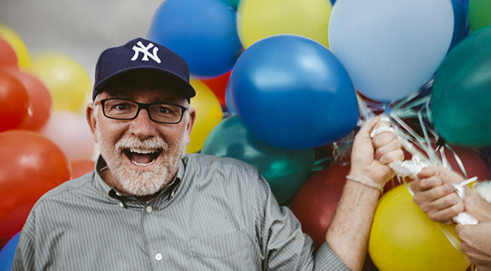
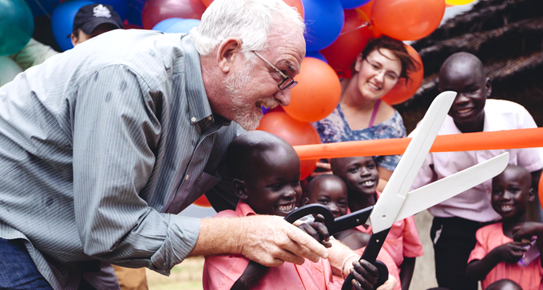
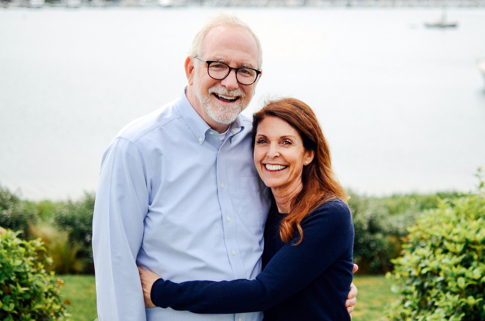

Design Challenge
Laying out the design challenge was the first step to truly getting to know my client Bob Goff. I accessed the IDEO Human Centered Design Toolkit to help guide me throught the design challenge process.


Audience & Goals
Knowing more information about my client and Sharing-economy from research, I was then able to identify two target audiences and develop a hierarchy of goals to meet the need of each audience.
